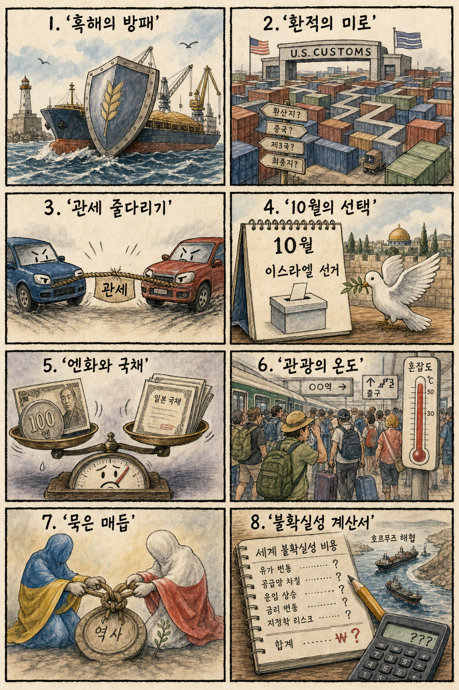
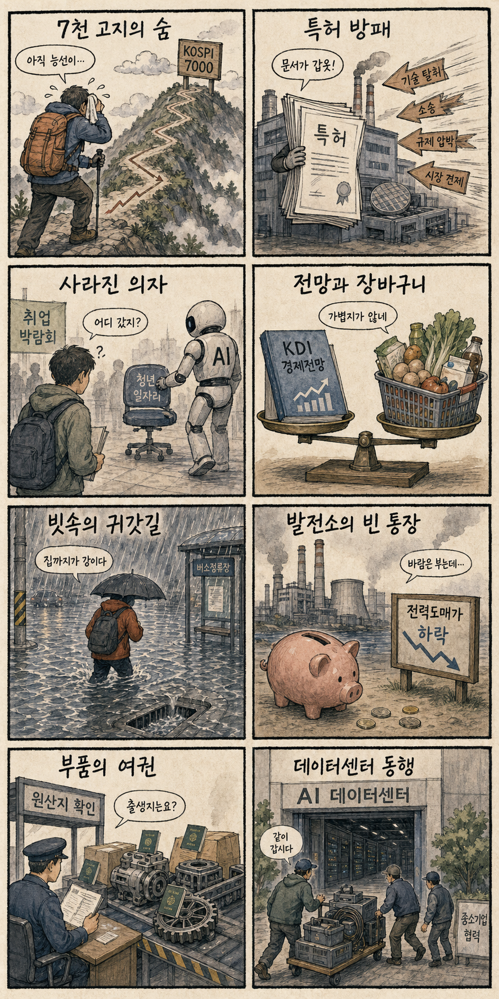

01
AMD · 487.60→514.39달러 · +5.49%
내용요약 반도체주가 혼조인 가운데 정규장 시가 대비 5.49% 상승하며 뚜렷한 상대강세를 보였습니다.
예상여파 국내 반도체 심리에 우호적이지만 KOSPI 대형 반도체는 연속 상승 뒤여서 다음 거래일 추격 손익비를 따로 봐야 합니다.
MORNING_BRIEFING_20260816
작성 시각: 2026-08-16 06:39 KST · 직전 미국 정규장과 2026-08-16 KST 당일 공개 기사 기준
미국 증시는 주말로 휴장했으며 가장 최근 정규장인 8월 14일에는 다우 -0.20%, S&P 500 -0.17%, 나스닥 -0.28%로 소폭 하락했습니다. 7월 소매판매 부진과 중동발 유가 상승 경계가 최근 랠리의 숨 고르기를 이끌었습니다. 한국 증시도 8월 16일 일요일로 휴장하며, 다음 거래일에는 KOSPI의 장중 7,000선 돌파 뒤 매물 소화와 미국 반도체주의 종목별 차별화가 핵심입니다.
| 지수 | 종가 | 등락률 | 한국 증시 영향 |
|---|---|---|---|
| 다우존스 | 53,732.41 | -0.20% | 경기민감주 숨 고르기 |
| S&P 500 | 7,785.76 | -0.17% | 위험선호 소폭 둔화 |
| 나스닥 종합 | 26,729.16 | -0.28% | 기술주 차별화 |
가장 최근 정규장은 소매판매 부진과 유가 경계로 쉬어갔습니다.
14일 2.42% 상승했지만 시가 대비로는 0.25% 밀렸습니다.
일요일로 다음 거래일의 갭과 수급을 준비합니다.
휴장일이며 확률·표본·손익비 문턱을 충족한 후보가 없습니다.
8월 15일 보고서는 국내 증시 휴장과 수급·컨센서스·보정 표본·손익비 문턱을 동시에 검증하지 못해 공식 추천을 내지 않았습니다. 오늘 손익은 공식 추천 0건으로 계산 대상이 없으며 게시 당시 판단은 그대로 유지됩니다.
| 시장 | 종가 | 등락률 | 해석 |
|---|---|---|---|
| KOSPI | 6,977.94 | +2.42% | 5거래일 상승·장중 7,000 돌파 |
| KOSDAQ | 864.65 | +0.38% | 대형주 대비 제한 상승 |
| 다우존스 | 53,732.41 | -0.20% | 소매판매 부진 반영 |
| S&P 500 | 7,785.76 | -0.17% | 최근 상승 뒤 숨 고르기 |
| 나스닥 | 26,729.16 | -0.28% | 기술주 차별화 |
삼성전자 +2.43%, SK하이닉스 +3.26%로 지수 상승을 이끌었습니다.
정규장 시가 대비 +5.49%로 반도체 내 상대강세를 보였습니다.
크라우드스트라이크 -4.26%, 팔란티어 -3.05%로 시가 대비 약세였습니다.
KOSPI는 장중 기록을 세웠지만 시가 대비 -0.25%로 마감했습니다.
내용요약 반도체주가 혼조인 가운데 정규장 시가 대비 5.49% 상승하며 뚜렷한 상대강세를 보였습니다.
예상여파 국내 반도체 심리에 우호적이지만 KOSPI 대형 반도체는 연속 상승 뒤여서 다음 거래일 추격 손익비를 따로 봐야 합니다.
내용요약 미국 기술주가 약보합인 날 사이버보안주가 시가 대비 4% 넘게 하락했습니다.
예상여파 국내 보안·AI 소프트웨어 테마의 단기 심리를 누를 수 있어 수주와 실적이 확인되는 종목 중심의 선별이 중요합니다.
내용요약 최근 상승 피로와 성장주 차익실현 속에 시가 대비 3.05% 하락했습니다.
예상여파 국내 AI 소프트웨어 테마도 높은 밸류에이션과 수급 변동성에 민감해질 수 있습니다.
내용요약 AMD 강세와 달리 시가 대비 1.91% 하락해 반도체 업종 내부 차별화가 나타났습니다.
예상여파 미국 반도체 지수만으로 국내 공급망 전체를 같은 방향으로 해석하기보다 제품·고객별 실적을 구분해야 합니다.
내용요약 실적 전망 우려가 부각되며 전일 종가 대비 5% 넘게 하락했고 정규장 안에서는 저가 매수로 시가 대비 1.75% 반등했습니다.
예상여파 반도체 장비주의 수주 가시성과 다음 분기 전망에 대한 눈높이가 낮아지면 국내 장비·소재주에도 차별화 압력이 생길 수 있습니다.
오늘은 일요일로 KOSPI·KOSDAQ이 휴장합니다. 다음 거래일에는 미국 지수의 소폭 하락보다 KOSPI가 5거래일 연속 오른 뒤 장중 7,000선을 찍고 밀린 자체 수급이 더 중요합니다. 삼성전자와 SK하이닉스는 14일 각각 2.43%, 3.26% 상승했지만 KOSPI는 시가 대비 -0.25%, KOSDAQ은 -0.39%로 마감했습니다. 미국에서는 AMD가 강했으나 장비·보안·AI 소프트웨어가 약해 업종 전체 추격보다 외국인 현·선물 수급과 시초가 갭을 먼저 보는 편이 합리적입니다.
오늘은 추천 없음 — 현금 관망
일요일 국내 증시 휴장일이며 전일까지의 외국인·기관 수급, 컨센서스 변화, 30건 이상 유사 조건 확률 보정, 예상 손익비 1.5 이상을 동시에 검증해 종합점수 75점·상승확률 60% 문턱을 넘긴 후보가 없습니다. 주말 뉴스만으로 다음 거래일 상승확률을 만들지 않습니다.
관심 연결종목 AI 데이터센터 국산 장비, HBM, 의료로봇 공급망은 관찰 대상일 뿐 매수 추천이 아닙니다. 다음 거래일 갭 상승 시 추격매수 금지입니다.
일요일로 다음 거래일 시초가 갭을 준비합니다.
장중 돌파 뒤 밀린 매물과 외국인 수급의 지속성을 봅니다.
성장률·물가 전망 변화와 민생물가 대책을 점검합니다.
침수와 연휴 교통·항공·물류 차질 위험을 살핍니다.
핵심 요약: AI 데이터센터 대형 사업에 국내 중소 소재·부품·장비 기업의 참여를 넓히려는 움직임이 구체화됐습니다. 비전 AI와 의료로봇의 사업화 기회가 커지는 한편, 엔비디아의 대규모 스페이스X 지분과 메모리 제품 믹스 변화는 가치평가와 공급 사이클을 함께 보게 합니다.
내용요약 정부가 AI 데이터센터 대형 사업에 중소기업 참여를 넓혀 국산 소재·부품·장비 생태계를 키우겠다는 구상을 전한 기사입니다.
예상여파 서버 냉각·전력·네트워크 장비의 실증 기회가 늘 수 있으나 실제 발주와 납품 규격 공개가 수혜 범위를 가를 전망입니다.
내용요약 엔비디아가 약 30조 원 규모의 스페이스X 지분을 보유한 것으로 알려지며 AI 투자 생태계의 순환 거래 우려가 제기됐습니다.
예상여파 상호 지분과 매출 연결이 커질수록 성장 기대와 함께 가치평가 중복·자금 회수 위험을 더 엄격히 점검할 필요가 있습니다.
내용요약 국내 비전 AI 기업이 세계 시장 성과를 바탕으로 피지컬 AI 분야 확장을 추진한다는 보도입니다.
예상여파 제조·로봇 현장의 영상 인식 수요가 커질 수 있지만 해외 고객 확대와 반복 매출이 경쟁력을 판별할 핵심입니다.
내용요약 내년 범용 메모리 가격 하락 가능성과 삼성전자·SK하이닉스의 HBM 생산 비중 확대 전망을 다룬 기사입니다.
예상여파 고부가 HBM 전환은 제품 믹스에 긍정적이나 범용 메모리 가격 조정과 증설 경쟁은 수익성 변동 요인입니다.
내용요약 정부가 국산 의료로봇의 기술개발부터 인허가·해외진출까지 전 주기를 지원한다는 소식입니다.
예상여파 병원 실증과 조달 경로가 넓어질 수 있으며 임상 유효성·안전성·유지보수 역량이 사업화 속도를 좌우합니다.
핵심 요약: 흑해 항만과 전략시설에 대한 상호 타격으로 곡물·물류 위험이 다시 커졌습니다. 미국의 환적 단속과 자동차 관세 경쟁, 이스라엘 총선, 일본 엔화·미 국채 수급은 공급망과 금융시장의 불확실성을 동시에 높이는 변수입니다.
내용요약 러시아가 우크라이나 흑해 항만을 공격하고 우크라이나가 러시아 우주시설을 타격했다는 보도입니다.
예상여파 곡물 물류와 전략시설 위험이 함께 커지면 해상보험료·곡물 가격과 휴전 협상의 변동성이 높아질 수 있습니다.
내용요약 미국 대통령이 관세를 피하기 위한 대규모 환적 사기가 발생했다고 주장한 소식입니다.
예상여파 원산지 증명과 우회수출 단속이 강화되면 자동차·전자·소재 공급망의 통관 비용과 납기 부담이 커질 수 있습니다.
내용요약 포드와 GM이 미국 대표 자동차의 지위를 두고 경쟁하면서 한국산 차량 관세 문제에서도 입장이 충돌한다는 보도입니다.
예상여파 미국 내 생산 비중과 관세 적용 방식에 따라 완성차 가격 경쟁력과 한국 부품 공급망의 전략이 달라질 수 있습니다.
내용요약 이스라엘의 10월 총선을 앞두고 현 총리의 정치적 입지와 가자 전쟁 책임론을 짚은 기사입니다.
예상여파 선거 국면의 강경 경쟁이 휴전 협상과 중동 위험 프리미엄을 흔들 가능성이 있어 외교 일정이 중요합니다.
내용요약 미국 재무부의 외환시장 개입이 엔화 방어보다 미국 국채시장 안정에 초점을 뒀다는 분석입니다.
예상여파 환율과 국채 수급이 얽히면 엔화 변동성과 미 장기금리가 동시에 움직여 아시아 금융시장에 영향을 줄 수 있습니다.

핵심 요약: 다음 거래일 증시는 KOSPI 7,000선 안착 여부와 외국인 수급을 확인해야 합니다. 반도체 특허 리스크, AI 노출 업종의 청년 고용 감소, KDI 수정 경제전망과 남해안 집중호우가 산업·정책·생활의 핵심 변수입니다.
내용요약 지난주 KOSPI의 흐름과 다음 주 상승 지속 가능성을 점검한 시장 기사입니다.
예상여파 장중 7,000선 돌파 뒤 매물 소화와 외국인 수급 지속 여부가 다음 거래일 방향을 가를 핵심입니다.
내용요약 삼성전자가 넷리스트와 분쟁을 마무리했지만 국내 반도체 업계의 특허 분쟁 위험은 여전하다는 보도입니다.
예상여파 소송 비용과 공급망 불확실성을 줄이려면 핵심 특허 포트폴리오와 라이선스 대응력을 강화해야 합니다.
내용요약 감소한 청년 취업자의 절반이 AI 노출도가 높은 업종에 집중됐다는 분석입니다.
예상여파 자동화 충격이 청년·초급 직무에 먼저 나타날 수 있어 전환교육과 경력 진입 통로 보완이 시급해질 수 있습니다.
내용요약 이번 주 KDI 수정 경제전망 발표와 정부의 민생물가 대응 일정을 예고한 기사입니다.
예상여파 성장률·물가 전망 변화는 금리 기대와 내수주 심리에 영향을 주며 생활물가 대책의 강도도 주목됩니다.
내용요약 광복절 연휴 이튿날 전국에 비가 내리고 남해안에는 시간당 최대 70㎜의 강한 비가 예보됐습니다.
예상여파 침수·산사태와 교통·항공·물류 지연 위험이 커져 시설 점검과 이동 일정 조정이 필요합니다.
